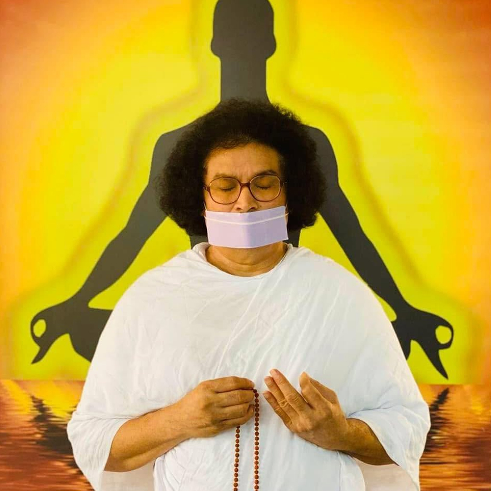
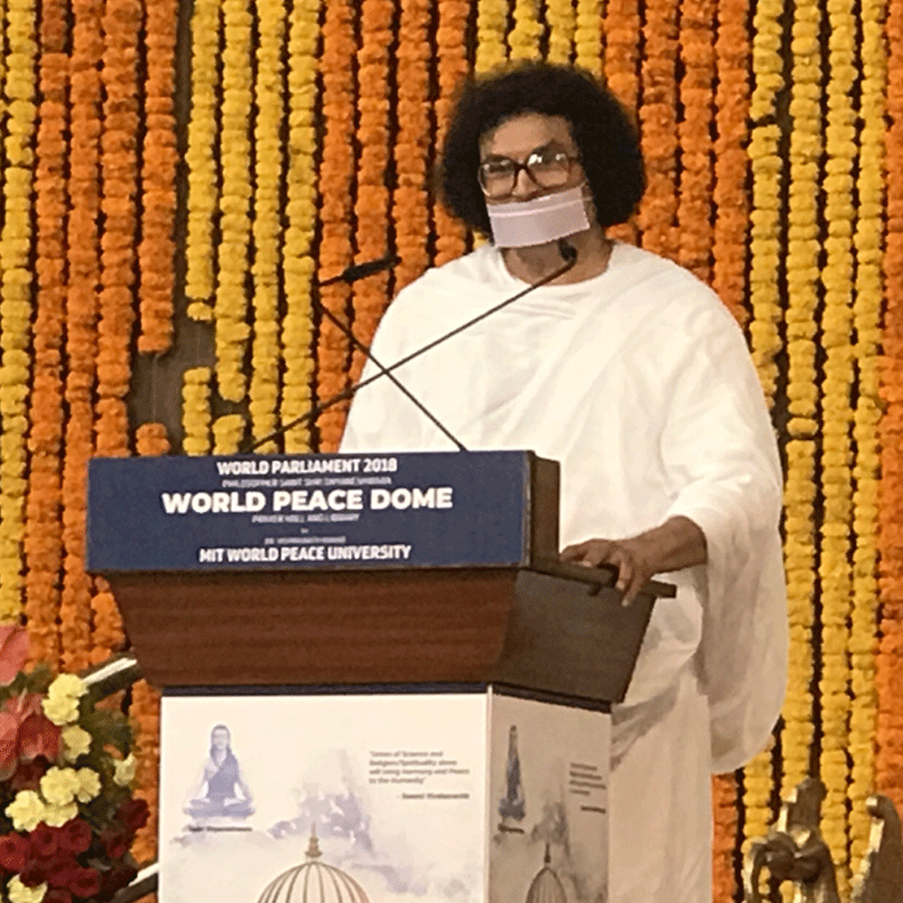
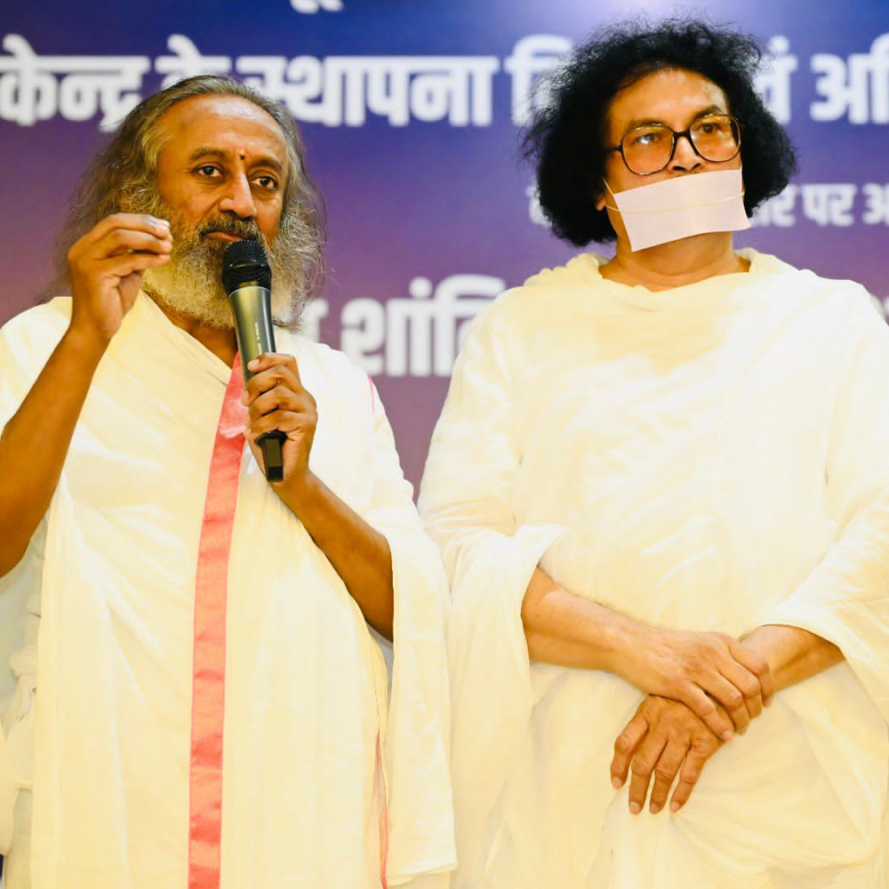
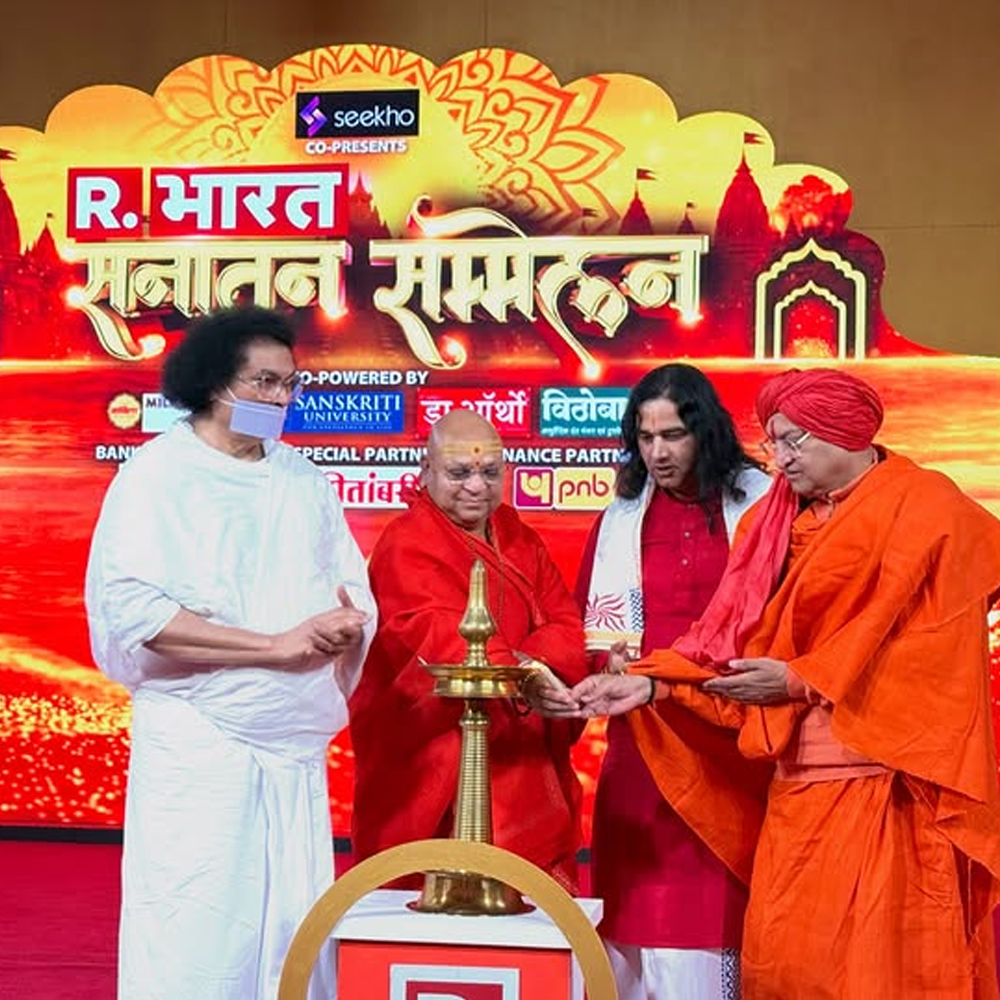
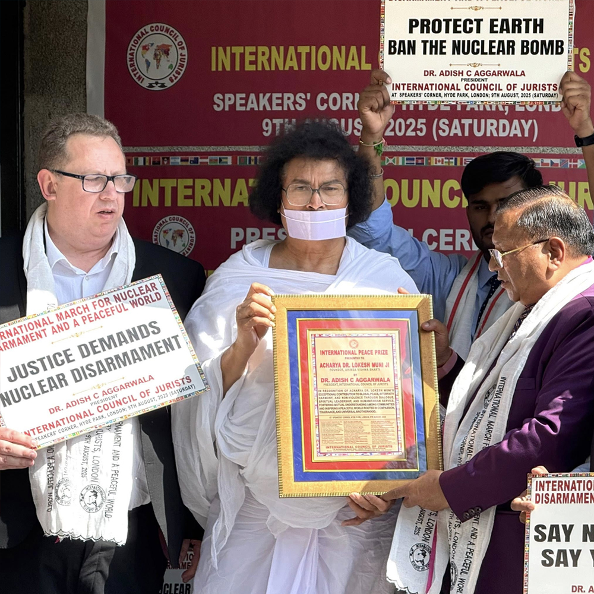

About Lokesh Muni
From the monasteries of Rajasthan to the halls of the United Nations

A Spirit Born for Service
Lokesh Muni was born in the early 1950s in the spiritually rich landscape of Rajasthan, India — a land steeped in Jain philosophy and the ethic of non-harm. From childhood, he was drawn to the deeper questions of existence, compassion, and what it truly means to live an ethical life.
He took monastic vows within the Sthanakvasi tradition of Jainism at a young age, immersing himself in the study of Agamas — the ancient Jain scriptural corpus — and in the rigorous practice of non-violence in thought, word, and deed. For years, he walked barefoot across India in the tradition of Jain monks, spreading the message of Ahimsa.
Beyond the Monastery
Over time, Lokesh Muni recognized that Ahimsa could not remain a private virtue practiced only within spiritual communities. The world was in desperate need of its principles — in governance, in diplomacy, in education, and in everyday human relationships.
He transitioned from the traditional monastic role to become what some have called a "monk-activist" — blending deep spiritual authority with practical, engaged action in the world. He began meeting with political leaders, diplomats, and religious figures from across all faiths, initiating dialogues that transcended barriers of religion, language, and nationality.


Building a Global Architecture for Peace
In the 1990s, Lokesh Muni founded what would become the Ahimsa World Alliance — an international organization dedicated to propagating non-violence as a living, practical force for conflict resolution, social justice, and sustainable living.
The Alliance has since grown into a global platform, connecting individuals, organizations, and governments united by the commitment to Ahimsa. It has established programs across Asia, Europe, the Americas, and Africa, engaging with millions of people through interfaith forums, educational programs, youth initiatives, and diplomatic outreach.
"Ahimsa is not weakness. It is the most demanding and most powerful form of strength the human spirit can manifest."
— Lokesh Muni
Milestones & Journey
Birth in Rajasthan
Born into a devout Jain family, immersed from birth in the values of non-violence, truth, and compassion.
Monastic Vows
Takes formal monastic initiation within the Sthanakvasi Jain tradition; begins decades of study, practice, and pilgrimage across India.
First Interfaith Dialogue Initiatives
Begins organizing meetings between Hindu, Muslim, Sikh, Christian, and Jain leaders in India, pioneering grassroots interfaith harmony work.
Founding of Ahimsa World Alliance
Establishes the global platform that will become the cornerstone of his international peace and non-violence work.
Addresses United Nations
Presents Ahimsa as a framework for global conflict resolution at the United Nations, gaining international recognition.
Meeting with Pope John Paul II
Historic interfaith dialogue with the Vatican, establishing ties between Jain and Catholic traditions in the pursuit of peace.
Youth for Ahimsa Global Launch
Launches flagship youth program spanning 50+ countries, engaging the next generation in active non-violence practice.
Continuing the Mission
Active across 100+ countries, Lokesh Muni continues to speak, write, and build alliances for a world rooted in compassion and non-violence.
Awards & Recognition

Global Peace Ambassador Award
United Nations, Geneva

Interfaith Harmony Award
Parliament of World's Religions
Padma Shri
Government of India
World Harmony Award
International Peace Bureau